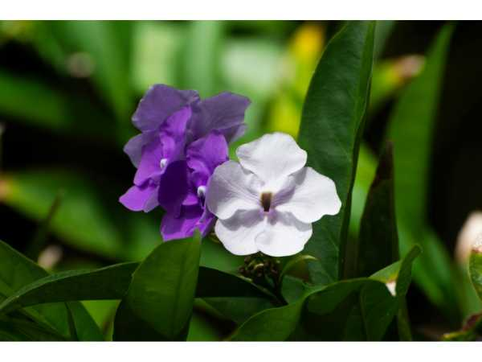

Brunfelsia pauciflora
Common Names: Yesterday Today and Tomorrow, Morning Noon and Night, Kiss Me Quick
Local Name: Brunfelsia (Tamil/Hindi)
Family: Solanaceae
Origin: Brazil and South America
Plant Type: Evergreen ornamental shrub
Average Lifespan: 10–20 years
| Growth Habit | Bushy, rounded evergreen shrub; dense branching |
| Plant Size | 1–3 meters tall and wide |
| Leaves | Elliptic to oblong, glossy dark green, 5–12 cm long, leathery texture |
| Flowers | Tubular with 5 flat petals; flowers change color from purple to lavender to white over 3 days |
| Flower Characteristics | Fragrant; purple on day 1 (yesterday), lavender on day 2 (today), white on day 3 (tomorrow); multiple colors visible simultaneously |
| Root System | Fibrous, moderately deep; well-anchored |
| Climate | Tropical to subtropical; frost-sensitive |
| Temperature Range | 15–35°C; protect from frost |
| Rainfall Requirement | 1000–2000 mm annually |
| Soil Type | Well-drained, slightly acidic, humus-rich soil |
| Soil pH Preference | 5.5–6.5; slightly acidic preferred |
| Sun Requirement | Full sun to partial shade; best flowering in full sun |
| Spacing | 1.5–2 meters between plants |
| Irrigation Method | Regular watering; allow soil to dry slightly between waterings |
| Water Requirement | Moderate; avoid waterlogging |
| Can it Grow in Pots? | Yes, excellent container plant; use 20–30 liter pots |
| Fertilizer Schedule | Monthly during growing season; use acidic fertilizer or azalea feed |
| Recommended Organic Fertilizers | Compost, peat moss, coffee grounds to maintain acidity |
| Pesticide Frequency | As needed; generally pest-resistant |
| Recommended Organic Pesticides | Neem oil for spider mites and aphids |
| Mulching Practice | Acidic mulch (pine bark, leaf mold) to maintain soil pH and moisture |
| Pruning Time | After main flowering flush; light shaping only |
| How to Prune | Light tip pruning to maintain shape; avoid heavy pruning which reduces flowering |
| Common Pests | Spider mites, aphids, whiteflies (especially in dry conditions) |
| Common Diseases | Root rot (overwatering), powdery mildew, leaf spot |
| Disease Prevention & Remedies | Good drainage, adequate air circulation, avoid overhead watering |
| Flowering Months | Spring and summer; can flower intermittently year-round in tropical climates |
| Pollination Type | Insect pollinated; butterflies and bees |
| Pollination Notes | Fragrant flowers attract pollinators; rarely sets fruit in cultivation |
| Propagation by Cuttings | Semi-hardwood cuttings in summer; use rooting hormone; root in 4–6 weeks |
| Propagation by Seeds | Seeds germinate in 3–4 weeks; less common than cuttings |
| Water Usage | Moderate; efficient once established |
| Biodiversity Benefits | Attracts butterflies and bees; fragrant flowers support pollinators |
| Companion Plants | Gardenias, azaleas, camellias (similar acidic soil preference) |
| Commercial Production Regions | Widely cultivated in tropical and subtropical nurseries worldwide |
| Market Uses | Ornamental garden plant, container plant, landscape shrub |
| Market Value (Approx.) | ₹150–500 per plant in Indian nurseries |
| Symbolism | The color-changing flowers symbolize the passage of time and the transience of beauty |
| Traditional Uses | Popular garden ornamental across tropical Asia; used in traditional medicine in South America (caution: toxic if ingested) |
Add your field observations here.